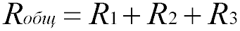
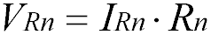
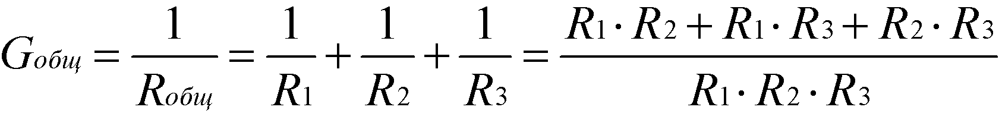
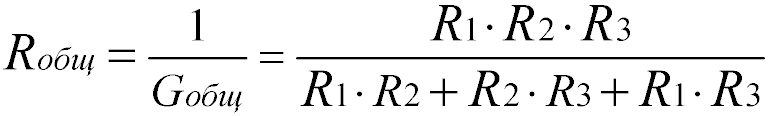
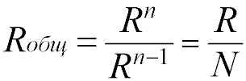
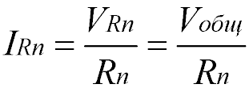
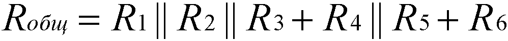
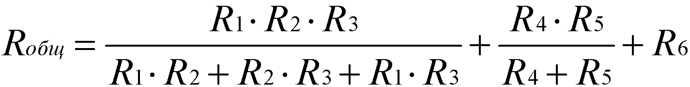

Последовательное и параллельное соединение резисторов
Последовательное соединение резисторов
Последовательное соединение – это соединение двух или более резисторов в форме цепи, в которой каждый отдельный резистор соединяется с другим отдельным резистором только в одной точке.
Общее сопротивление Rобщ
При таком соединении, через все резисторы проходит один и тот же электрический ток. Чем больше элементов на данном участке электрической цепи, тем «труднее» току протекать через него. Следовательно, при последовательном соединении резисторов их общее сопротивление увеличивается, и оно равно сумме всех сопротивлений.
Напряжение при последовательном соединении
Напряжение при последовательном соединении распределяется на каждый резистор согласно закону Ома:
Т.е чем большее сопротивление резистора, тем большее напряжение на него падает.
Параллельное соединение резисторов
Параллельное соединение – это соединение, при котором резисторы соединяются между собой обоими контактами. В результате к одной точке (электрическому узлу) может быть присоединено несколько резисторов.
Общее сопротивление Rобщ
При таком соединении, через каждый резистор потечет отдельный ток. Сила данного тока будет обратно пропорциональна сопротивлению резистора. В результате общая проводимость такого участка электрической цепи увеличивается, а общее сопротивление в свою очередь уменьшается.
Таким образом, при параллельном подсоединении резисторов с разным сопротивлением, общее сопротивление будет всегда меньше значения самого маленького отдельного резистора.
Формула общей проводимости при параллельном соединении резисторов:
Формула эквивалентного общего сопротивления при параллельном соединении резисторов:
Для двух одинаковых резисторов общее сопротивление будет равно половине одного отдельного резистора:

Соответственно, для n одинаковых резисторов общее сопротивление будет равно значению одного резистора, разделенного на n.
Напряжение при параллельном соединении
Напряжение между точками A и B является как общим напряжением для всего участка цепи, так и напряжением, падающим на каждый резистор в отдельности. Поэтому при параллельном соединении на все резисторы упадет одинаковое напряжение.
Электрический ток при параллельном соединении
Через каждый резистор течет ток, сила которого обратно пропорциональна сопротивлению резистора. Для того чтобы узнать какой ток течет через определенный резистор, можно воспользоваться законом Ома:
Смешанное соединение резисторов
Смешанным соединением называют участок цепи, где часть резисторов соединяются между собой последовательно, а часть параллельно. В свою очередь, смешанное соединение бывает последовательного и параллельного типов.
Общее сопротивление Rобщ
Для того чтобы посчитать общее сопротивление смешанного соединения:
- Цепь разбивают на участки с только пареллельным или только последовательным соединением.
- Вычисляют общее сопротивление для каждого отдельного участка.
- Вычисляют общее сопротивление для всей цепи смешанного соединения.
Так это будет выглядеть для схемы 1:
Также существует более быстрый способ расчета общего сопротивления для смешанного соединения. Можно, в соответствии схеме, сразу записывать формулу следующим образом:
- Если резисторы соединяются последоватеьно — складывать.
- Если резисторы соединяются параллельно — использовать условное обозначение «||».
- Подставлять формулу для параллельного соединения где стоит символ «||».
Так это будет выглядеть для схемы 1:
После подстановки формулы параллельного соединения вместо «||»:
